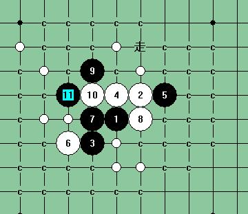

[学术讨论]好的，那我来个加强版本的解说这个斜月一打6手吧
#1 [学术讨论]好的，那我来个加强版本的解说这个斜月一打6手吧 作者：岳麓小棋后 发表时间：2009-4-6 20:12:41
=======上图对应的爱五子棋谱代码如下，以便你拆解：========
h8i9g7h9j9f7
======================================================
如图，这个6手。结合在三手房间摆了2天这个6手的经历，发现这个6手白基本没什么机会，通盘被虐，就算黑不知道怎么杀，后面黑的杀不出，白的也没什么太好机会。以下是这两天来的实战路线图，一一道来。
如图，一般有这3个常见7手，对于G8这个7手，后面有这一路惨防，在QQ15分钟快棋上要杀出不是一件容易的事，这后面黑只是有优势，必胜否不懂？？？

对于I8点这个7手，后面只有如下两个8手可下
分别对应的两路强防如下：
这个后面黑要胜也是很复杂的
另一路强防
到这里白好好防后面要挂也是有难度的。
现在来看胜手7。胜手7只有2个最强8手，如下。
其中J8位的8手强防通次6地毯，有两种杀法，这个得感谢东南兄的帖子。
K8位的8手，结合三手摆棋经验，有常见4个9手下法
这4个9手也都有其强大之处，值得推敲，也许并不都是必胜9手。
然后就说到最强10手，这个2个最强10手防守很有意思，后面很多11，到最后都是只剩下一个强防点杀不掉，比如
这下面有意思的是这个13手和15手
这个14手和16手唯一防，后面黑很难杀掉，可以说白绝路逢生
另外个10手可以去看我的帖子 ShowPost.asp?ThreadID=6148 ，这后面我已经列出这两个白10最强的一路防守杀法，谱我就不发了，自己拆印象深刻点。
总结：这个白6手很弱，实战型职业棋手不会关注这个6手的，因为开这个白6等于提前给自己预设了个最多只能保和的结果，搞不好就输掉；对于网战终结型棋手也许会更想了解下这个白6手是怎么样倒下了，很多时候，要的是过程，并不是个结果，钓胜于鱼！
［ 茗弈小刀
#2 Re:好的，那我来个加强版本的解说这个斜月一打6手吧 作者：茗弈梓轩 发表时间：2009-4-10 11:29:38
学习了，这个白6弱手！顶！#3 Re:好的，那我来个加强版本的解说这个斜月一打6手吧 作者：山寨手机 发表时间：2009-4-11 13:55:21
学习了，消化ING............#4 Re:好的，那我来个加强版本的解说这个斜月一打6手吧 作者：山寨手机 发表时间：2009-4-11 13:56:05
小棋后好美哦。#5 Re:好的，那我来个加强版本的解说这个斜月一打6手吧 作者：小枫叶 发表时间：2009-4-11 14:39:00
嗯，谢谢小棋后了！学习了。。。。。。。#6 Re:Re:好的，那我来个加强版本的解说这个斜月一打6手吧 作者：茗弈小刀 发表时间：2009-4-11 16:20:58
引用：我想小棋后的美不仅是外表，她的内心更美，她是一本好书！
原文由 山寨手机 发表于 2009-4-11 13:56:05 :
小棋后好美哦。
#7 Re:好的，那我来个加强版本的解说这个斜月一打6手吧 作者：刀魂 发表时间：2009-4-11 16:57:03
小皇后，你发个 次6 终结谱上来 其实 更实惠，，，小刀应该给过你了吧